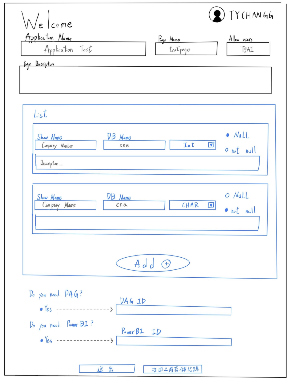
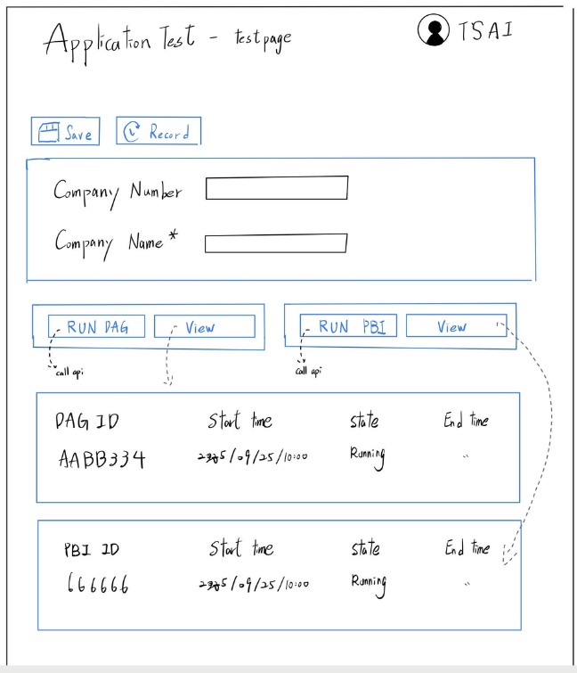

BSID-FLSD 企業網頁自動化與全端開發
在實習期間，我負責開發企業內部的網頁自動化系統。主要運用 React 和 Node.js，建立一套可以共用的元件庫跟腳本。這個系統的目標很明確：幫前端工程師省下重複開發的時間，讓整個研發團隊的效率變好。
對我來說，這份工作不只是單純寫程式，很大一部分是在學習怎麼去梳理大公司裡面複雜的業務流程，然後把它們轉換成實際的系統架構。


除了寫全端網頁，我也參與了系統的持續整合與佈署（CI/CD）流程。我把開發好的系統從本機端 (Local)，透過 Docker 打包成容器，並結合 Git 和 ArgoCD，最後穩穩地把它佈署到 K8s 的測試環境裡。這讓我對現代化的基礎設施有了很實務的了解。